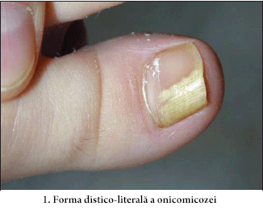
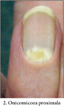
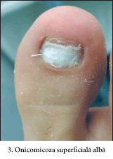
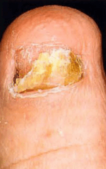
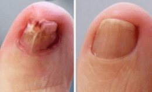

Practici tibetane în tratamentul ciupercii unghiei
Legendele despre eficiența medicinei tibetane circulă de mult timp.Descoperirile sale în domeniul practicilor medicinale sunt unice și se deosebesc cardinal de practicile altor culturi.Componențele substanțelor medicamentoase sunt variate și uimesc prin îmbinări neașteptate;în afară de aceasta, totul ce este produs în cadrul medicinei tibetane este absolut natural.Aceasta este valabil și în cazul substanțelor antimicotice.Ținând cont de multitudinea de afecțiuni, practicile tibetane combat cu succes toate tipurile de onicomicoze.
Tipurile de onicomicoze
Se disting 4 tipuri principale de onicomicoze:
În dependență de tipul de ciupercă, infecția se subdivizează în 4 grupe:
Onicomicoză distală sau distal laterală - este cea mai răspândită varietate de onicomicoză. Ciuperca pătrunde sub loja unghinală de pe marginile plăcii unghiale, după care culoarea unghiei se schimbă, începe să se fărâmițeze și să se subțieze.

Onicomicoză subunghială proximală - un tip de ciupercă rar. Molipsirea are loc din partea cuticulei, apoi afectează lunula unghiei. În acest caz, pata albă din zona lunulei se răspândește apoi pe întreaga unghie.

Onicomicoza superficială albă - se manifestă prin pete albe, fâșii pe placa unghiei, plasate de la lunulă spre marginea liberă. Cu timpul petele albe se înmulțesc, se extind și capătă o culoare galbenă.

Onicomicoză distrofică totală distruge toată placa unghială. Pe parcursul acestui proces unghia se îngroașă puternic, își schimbă culoarea și forma.

Tratamentul onicomicozei în Tibet
Micoza - este o afecțiune rezistentă și necesită un tratament intensiv și îndelungat. Alifiile și unguentele tradiționale, efectul cărora durează nu mai mult de 10 - 15 minute după o absorbție deplină, pot întinde procesul de tratament pe luni întregi fără să distrugă virusul complet. În Tibet deja de multe secole se practică o abordare complexă. Compresele îmbibate cu amestecuri de plante medicinale sunt purtate de bolnav timp de o lună, după care ciuperca unghiei dispare definitiv.
În ziua de astăzi, unele din remediile medicinale tibetane sunt
exportate cu success în întreaga lume.Printre ele se numără și preparatele
antimicotice. - este un preparat natural, creat
în baza practicilor tibetane de tratare a ciupercii unghiei. Сrema dat
recrează metoda antică de tratare a ciupercii, fiind copia sa modernă. Formula
care era folosită de secole de călugării tibetani în complexul
A fost demonstrat clinic, că mijloacele medicinei tibetane sunt de 5 ori mai eficiente decât alte preparate tradiționale în tratarea ciupercii.

Crema este 100% natural, el este
compus din:
1) CHAMOMILA RECUTITA FLOWER EXTRACT - antibiotic natural cu o
acțiune antimicotică și cicatrizantă.
2) BUTYROSPERMUM PARKII BUTTER , întărește sistemul
imun, ameliorează circulația sangvină, elimină procesul de
inflamare.
3) PINUS SYLVESTRIS LEAF OIL accelerează procesul de
cicatrizare a țesuturilor, intensifică regenerarea celulelor.
4) MELALEUCA ALTERNIFOLIA LEAF OI are un efect de
înmuiere, calmează pielea, vindecă fisurile cutanate.
5) PROPOLIS EXTRACT elimină rapid mâncărimea și
senzațiile dureroase.
Onicomicoza - este o afecțiune cu o viteză de desfășurare din cele mai lente, evoluția căreia de obicei decurge discret.Totuși neglijența față de propria sănătate deseori are cele mai negative consecințe. Peste 70 % din cei infectați, care ș - au lăsat afecțiunea să ajungă într - o stare avansată, își pierd unghiile deplin sau parțial. Aveți grijă de dvs. și fiți sănătoși!
La momentul actual crema - este unul din cele mai eficiente remedii
în combaterea ciupercii. El se distinge prin faptul că în afară de
simptomele de micoză, el are o acțiune medicamentoasă complexă imediat
asupra ambelor zone problematice (talpă și unghii). Crema


